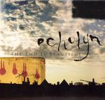

| Artist: | Echolyn |
| Title: | The End Is Beautiful |
| Label: | self produced |
| Length(s): | 55 minutes |
| Year(s) of release: | 2005 |
| Month of review: | [02/2006] |
| 1) | Georgia Pine | 5.49 |
| 2) | Heavy Blue Miles | 6.48 |
| 3) | Lovesick Morning | 10.12 |
| 4) | Make Me Sway | 5.22 |
| 5) | The End Is Beautiful | 7.45 |
| 6) | So Ready | 5.01 |
| 7) | Arc Of Descent | 5.46 |
| 8) | Misery, Not Memory | 9.03 |
Heavy Blue Miles shows us another typical Echolyn track, although the presence of a horn section is not usual for them, and it does give the music a bit more 'soul'. The melodies are good (as usual). Some of the horn parts take the band more into Cuneiform territory. An interesting combination of which we shall hear more this album.
Lovesick Morning is by comparison a very mellow track, with some accidental dreamy piano. Especially the chorus is pop like, reminding me of the Beatles. The trumpet brings in a laid back jazz feel, similar to say The Blue Nile. A slow track, that does not seem to get started properly, although the uplifting chorus and the tense guitar play that follows it does show the brilliance of the band. And the sax that comes in during one of the more up-beat parts reminds a bit of VDGG. Thus, the song may be a bit of a slow starter, but it does get going eventually.
On the other hand, Make Me Sway opens with modern electronics, followed by the rhythm section going against the grain. This is like the opener, a relatively heavy tracks, with the drummer hitting them hard, and plenty of riffing. The mellotron might seem to lighten the load somewhat. There is some tension building here, but I cannot escape the impression that again there is a bit too much instrumental noodling going on here. On The End Is Beautiful, the band does not take the easy approach as well. This song contains both elements of King Crimson (the guitarwork in places) and good old Gentle Giant (in some of the vocals), but for the rest it is pure Echolyn, alternating between highly energetic vocal harmonies and lower key simple vocals. The more uplifting parts are the best, imo.
So Ready is not a typical Echolyn song, it opens like a positive minded funky popsong, although it does have many of the typical Echolyn ingredients. This is also one of the songs that utilizes a horn section, which only adds to the groove, especially towards the end when they really start to swing. There is something very wall-of-sound seventies about this song.
Arc Of Descent is a moody ballad with good vocal melodies and backing vocals that power up the song. Misery, Not Memory brings back the quirkiness in the compositions of Echolyn, supported by good vocal melodies. There are strong elements of jazzrock here. The song has some powerful guitar parts, but also a introspective intermezzo with strings and spoken voices from movies. Of course, the song does power up, before we reach its end.